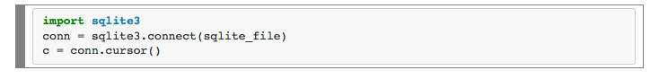

Brought to you by CodeKitchen
Make sure you have Python, Sublime Text or some other text editor installed.
In this workshop we will talk about what is a database, why you might need one and how to interact with it through example of sqlite database and Python.
Database is a just collection of data. Database software, like MySQL, are just programs that lets you store and retrieve that data as efficiently as possible.
Ridiculous example: Think about the documents stored on your computer. If you were to save all your documents using a (brain-dead) file naming scheme like "1.doc", "2.doc", "3.doc", ... "9,999,999.doc" (etc), you will eventually face a problem of finding the right file if you're looking for a specific document.
What Excel is good at:
What Excel is bad at:
Consists of a “server” that stores all your data (think of a huge library) and a mechanism for querying it (think of a reference librarian).
Querying is where SQL comes in. SQL stands for Structured Query Language, and it is a syntax for requesting things from the database. It’s the language the reference librarian speaks.
Every database consists of tables. Think of a table like a single worksheet in an Excel file, except with more ground rules. A database table consists of columns and rows.
Every column is given a name (like ‘Address’) and a defined column type (like ‘Integer,’ ‘Date’, or ‘Text’). You have to pick a column type, and it stays the same for every row. This sounds annoying but is very helpful. If you try to put the wrong kind of data in a column, it will get upset.
You can also specify helpful things like…
Rows are the actual data in the table. Once you establish the column structure, you can add in as many rows as you like. It’s OK for cells to be empty, but to a computer intentionally empty is not the same as nonexistent.
A database focuses only on the data layer of things and ignores visual presentation. Colors, fonts, borders, date formatting, and number formatting basically don’t exist. What you see is mostly what you get. A database is designed to plug in to other things.
Much of the power of ANY relational databases comes from SQL, a very flexible language for asking a database questions or giving it orders. The basic building blocks of SQL are four verbs: SELECT (look up something), UPDATE (change some existing rows), INSERT (add some new rows), DELETE (delete some rows). There are many other verbs but you will use these the most, especially SELECT.
In general, the only thing that needs to be done before we can perform any operation on a SQLite database via Python's sqlite3 module, is to open a connection to an SQLite database file:
where the database file (sqlite_file) can reside anywhere on our disk, e.g.,
If we are finished with our operations on the database file, we have to close the connection via the .close() method:
And if we performed any operation on the database other than sending queries, we need to commit those changes via the .commit() method before we close the connection:
Go to http://sqlitebrowser.org/ and download SQLite Database Browser. It allows you to view and edit SQLite databases.
Challenge: try writing your own python script for database we used for Twitter API workshop
Example to get you started